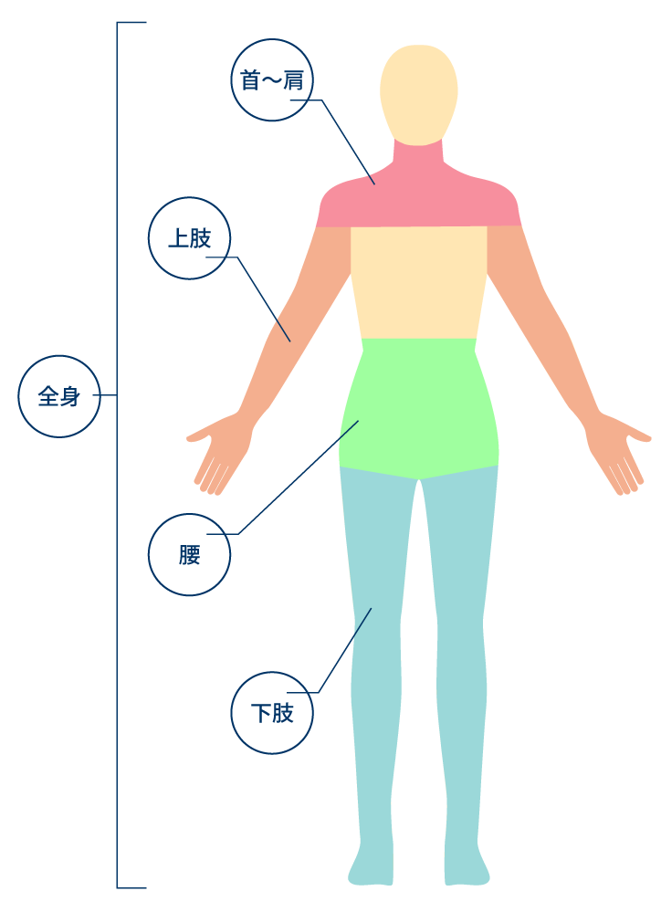
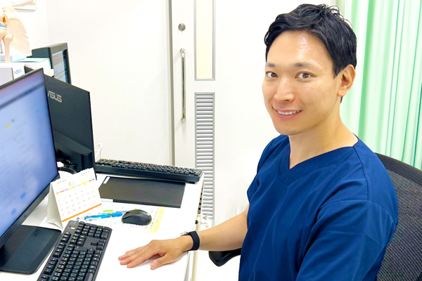

About当院について

充実のリハビリ器具を備えたリハビリ室

MRI完備で精密な検査が可能

CT完備で迅速な検査対応

広々とした待合室

成城学園前駅から徒歩1分でアクセス抜群

整形外科医が丁寧に診察
成城整形外科リウマチ科は、「まずは原因を知ること」を大切にしています。
痛みや不調には必ず理由があります。
その理由を丁寧に探し、患者様が安心して治療に進めるよう、画像診断を中心とした医療を行っています。
小さな不安や疑問も気軽にご相談いただける、地域の皆さまにとって長く安心して通える場所を目指しています。

Features当院の特徴
- MRI・CT検査が可能当院内で検査ができるため、原因を早く・正確に把握
- 専門医が丁寧に診断・説明よく分からないまま進む治療にならないよう、丁寧な説明を徹底
- 患者様に寄り添った治療方針症状や生活スタイルに合わせて、無理のない治療をご提案
- リハビリとの連携理学療法士・柔道整復師が、痛みの改善から再発予防までサポート
Conditions We Treat整形外科疾患一覧

上肢の症状
Doctor医師紹介

院長の稲垣隆太と申します。
当院は「痛みの原因を正確に知ること」を大切にしています。
そのために、MRI・CT・エコーなどの画像診断を院内に備え、症状の背景を丁寧に見極める診療を行っています。
これまで大学病院や地域病院で、人工膝関節・人工股関節の手術をはじめ、幅広い整形外科診療に携わってきました。
その経験を通じて、「正確な診断が、最適な治療につながる」ことを強く実感してきました。
痛みの理由が分からないまま治療が進むと、不安はなかなか消えません。
当院では、画像を一緒に確認しながら、分かりやすく丁寧に説明し、患者様が納得して治療に進めるよう心がけています。
どんな些細なことでも、どうぞお気軽にご相談ください。
皆さまの健康と安心のために、全力でサポートいたします。
Newsお知らせ
-
2026.03.03お知らせ4月6日（月）は休診となります。
-
2025.07.18お知らせ
-
2024.08.01お知らせ